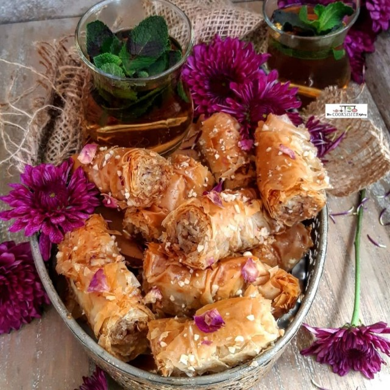

Pecan Baklava Roll

Bring the Middle Eastern sweets counter to your home with Michael Rantissi's pecan baklava rolls.
Baklava, baklava, baklava! It’s such an amazingly perfect dessert, but it’s often time-consuming to make. I’m so nuts (pun intended!) about baklava that I made a simpler, rolled variation that you can make much quicker.
Ingredients
- 300g pecans, finely crushed but not powdery, plus 100g extra to garnish
- 1 1/ 2 tsp ground cinnamon
- 1/4 freshly grated nutmeg
- 20 sheets fresh filo pastry
- 400g ghee, melted, cooled
- 500g caster sugar
- 60g glucose syrup
- 2 cinnamon quills
- 2 tbs lemon juice
Intructions
- Preheat oven to 150°C. For the syrup, place all ingredients and 300ml water in a medium saucepan over medium-high heat. Bring to the boil. Reduce heat to medium-low and cook, stirring, for 3-5 minutes until slightly thickened. Remove from heat and cool.
- Place crushed pecan in a bowl with the spices and stir to combine.
- As filo pastry dries out quickly, it is best to work with a few sheets at a time and then cover the rest with a lightly damp tea towel until ready to use. Brush a sheet of filo with ghee, then sprinkle about 2 tbs of nut and spice mixture on top. Layer with another sheet of filo, brush with ghee and sprinkle over 2 tbs nut mixture. Repeat this process until you have layered 5 sheets of filo with nut and spice mixture. Roll filo into a long log lengthways. Make sure that the roll is not too loose or too tight. Repeat until you have made 4 logs.
- Cut each log into 2.5cm-wide rounds. Arrange pieces close together with cut sides facing up in a large baking tray with high sides. Bake for 1 hour or until golden brown. Pour the cooled syrup over the hot baklava and let it rest. Sprinkle over extra crushed pecans to garnish.